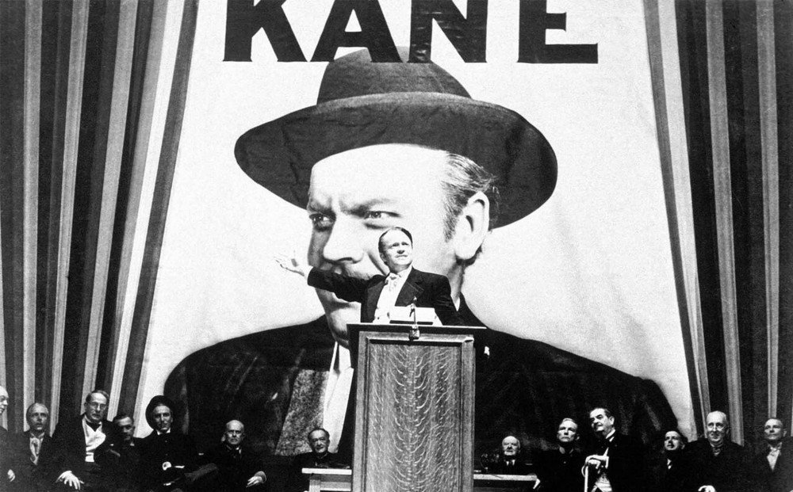
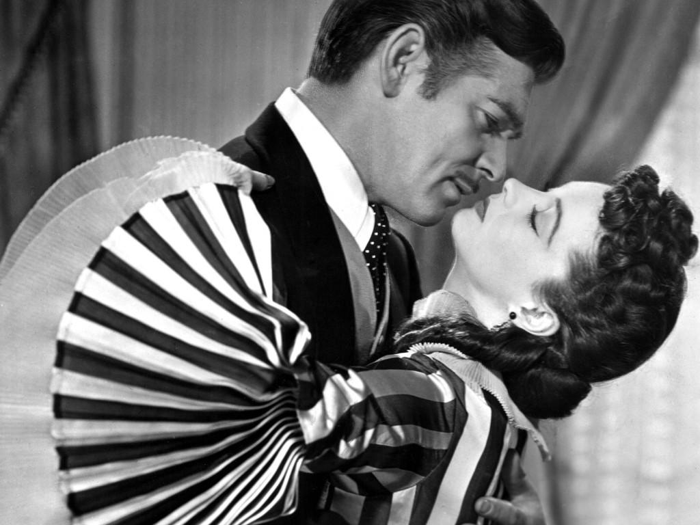

Citizen Kane
Synopsis: The investigation of a publishing tycoon's dying words reveals conflicting stories about his scandalous life.
12 Angry Men
Synopsis: Jury holdout tries to convince his colleagues to vote not guilty
Gone with the Wind
Synopsis: Classic tale of Scarlett O'Hara's battle to save her beloved Tara and find love during the Civil War.
All About Eve
Synopsis: An ambitious young actress tries to take over a star's career and love life.

The Grapes of Wrath
Synopsis: Oklahoma farmers dispossessed during the Depression fight for better lives in California.

Psycho
Synopsis: A woman on the run gets mixed up with a repressed young man and his violent mother.
Some Like it Hot
Synopsis: Two musicians on the run from gangsters masquerade as members of an all-girl band.
Vertigo
Synopsis: A detective falls for the mysterious woman he has been hired to tail.
The Wizard of Oz
Synopsis: A Kansas farm girl dreams herself into a magical land where she must fight a wicked witch to escape.